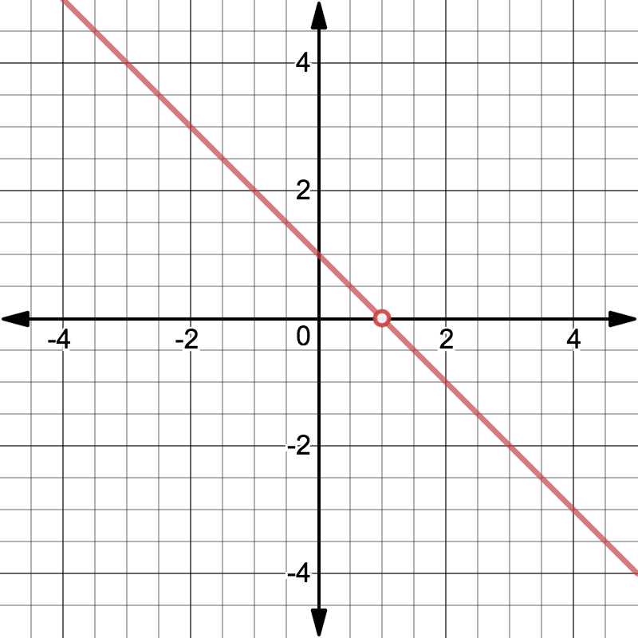
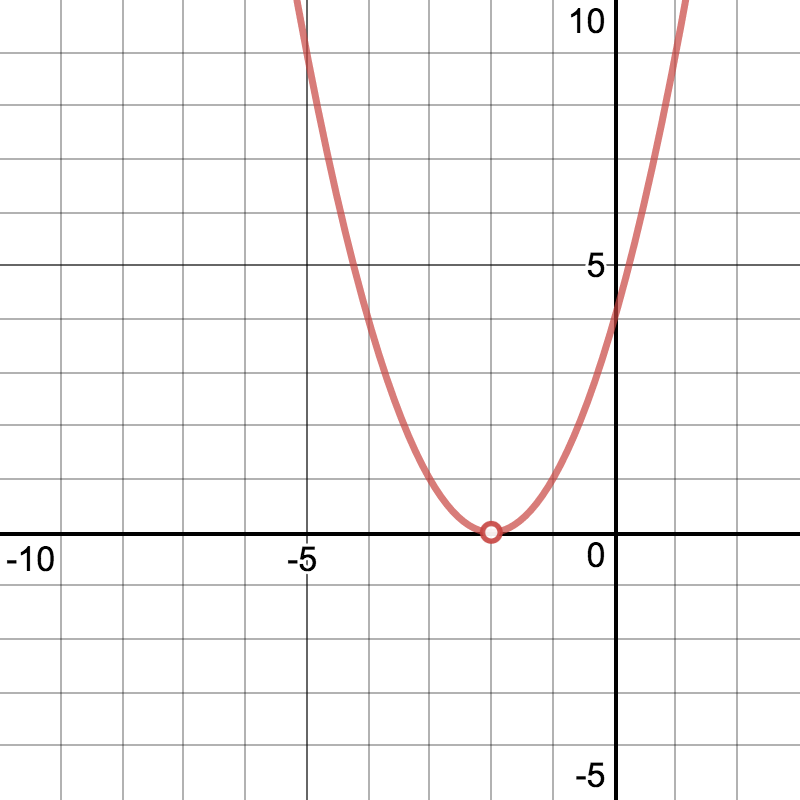
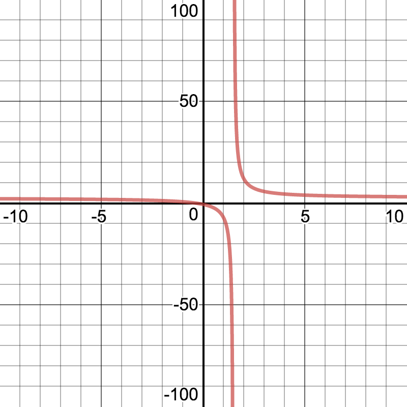
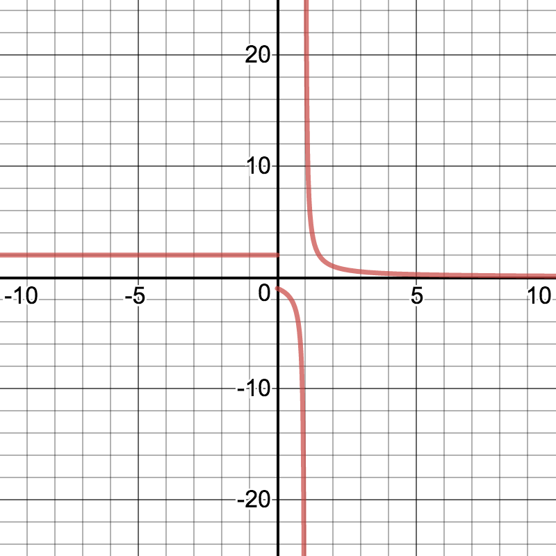
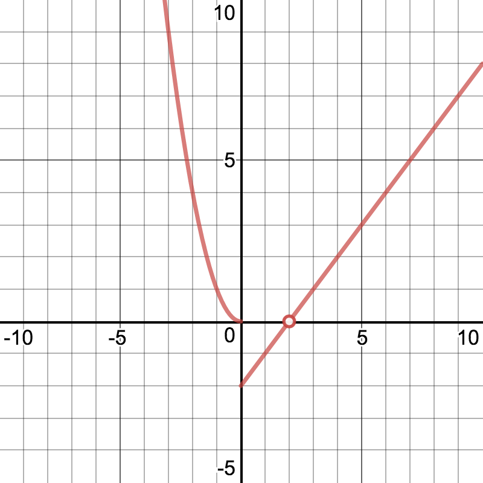
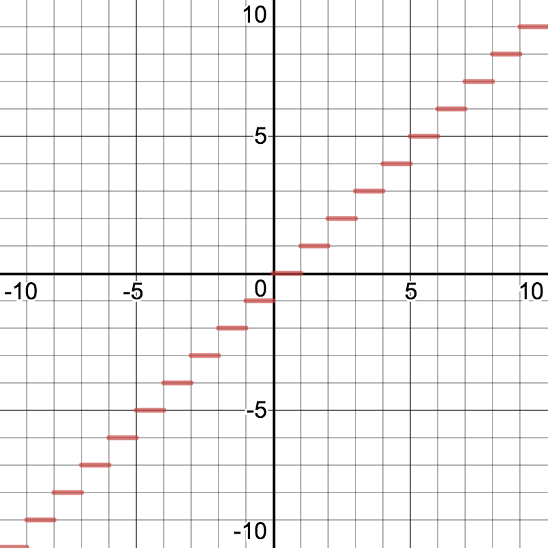

-
Julia
- What does it mean for a graph to be discontinuous? I don’t get it!
-
Dylan
- I think it’s like when there’s a hole in the graph or something.
-
James
- Actually there are different kinds of discontinuities, but they can be
hard to visualize so let’s take a look!
-
Altogether
- Let’s dive in!
Introduction
A function is said to be
continuous at a point if which three conditions are
satisfied?
is defined exists is linear
Example
Consider the function .

Through some simple elimination, we can easily see that this function is equivalent to
, where . Thus, there is one point on the original function we should pay close
attention to: .
Using the simple trick of squaring the denominator to create our numerator, we were
able to easily pick a point where we will have a discontinuous function, without
using a jump or infinite discontinuity. Jump discontinuities can easily be
made using piecewise functions, and infinite discontinuities are often best
made with rational functions, like fractions of polynomials! Don’t worry
if you haven’t discussed these discontinuities yet; we’ll see plenty in this
lab!
Problems
Consider the function :

Select all points which have a discontinuity.
What kind of discontinuity is present? Select all which apply.
Removable Discontinuity Jump Discontinuity Infinite Discontinuity
Using the format (-value, type of discontinuity), indicate the -values with their
corresponding type of discontinuity. If multiple discontinuities exist, list them in
ascending -value order. Make sure to put commas following each ordered pair when
necessary.
Consider the function :

Select all points which have a discontinuity.
What kind of discontinuity is present? Select all which apply.
Removable Discontinuity Jump Discontinuity Infinite Discontinuity
Using the format (-value, type of discontinuity), indicate the -values with their
corresponding type of discontinuity. If multiple discontinuities exist, list them in
ascending -value order. Make sure to put commas following each ordered pair when
necessary.
Consider the function :

Select all points which have a discontinuity.
What kind of discontinuity is present? Select all which apply.
Removable Discontinuity Jump Discontinuity Infinite Discontinuity
Using the format (-value, type of discontinuity), indicate the -values with their
corresponding type of discontinuity. If multiple discontinuities exist, list them in
ascending -value order. Make sure to put commas following each ordered pair when
necessary.
Consider the function :

Select all points which have a discontinuity.
What kind of discontinuity is present? Select all which apply.
Removable Discontinuity Jump Discontinuity Infinite Discontinuity
Using the format (-value, type of discontinuity), indicate the -values with their
corresponding type of discontinuity. If multiple discontinuities exist, list them in
ascending -value order. Make sure to capitalize the type of discontinuity, and put
commas following each ordered pair when necessary.
Consider the function :

Select all points which have a discontinuity.
What kind of discontinuity is present? Select all which apply.
Removable Discontinuity Jump Discontinuity Infinite Discontinuity
Think of the different types of numbers - Rationals, Irrationals, Integers, Natural
Numbers, Real Numbers, etc. If need be, look up what each of these are to refresh
your memory.
Indicate for what kind of numbers the function is discontinuous.
-
Julia
- Whenever I see people talking about jump discontinuities, they always
use piecewise functions. Do you think it’s possible to make one without
the function being piecewise?
-
Dylan
- If there’s one thing that I’ve learned in math, it’s that there are
usually two ways to do anything! I’m not really sure how you would make
something like that though...
-
James
- I know one function that would work!
James says the function has a constant value on the positive values, a different
constant value for negative values, and is undefined at .
What function is James talking about?
-
Julia
- Hey y’all, I was looking at our continuous graphs and noticed something.
-
Dylan
- What did you see? They all look like pretty normal functions to me.
-
James
- Yeah, I don’t really know what you mean.
-
Julia
- Well, discontinuities mean there is a chunk of the graph where you can
skip over a value, right? Like, we can jump right from 1 to 5, or have a
hole where some value isn’t attained.
-
Dylan and James
- Right. And?
Can we skip any of the values?
What does Julia want to say about every value in a range of values on a continuous
graph?
Every value between and will be attained at some point on the interval Only normal looking functions are continuous. No values that are not between and
will be attained over the interval. No functional values are repeated over the
interval.
Congrats! You found what’s called the
Intermediate Value Theorem!
Intermediate
Value If is a continuous function for all in the closed interval and is between and ,
then there is a number in such that .